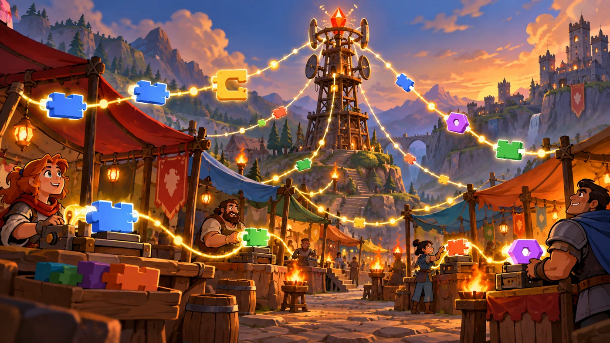
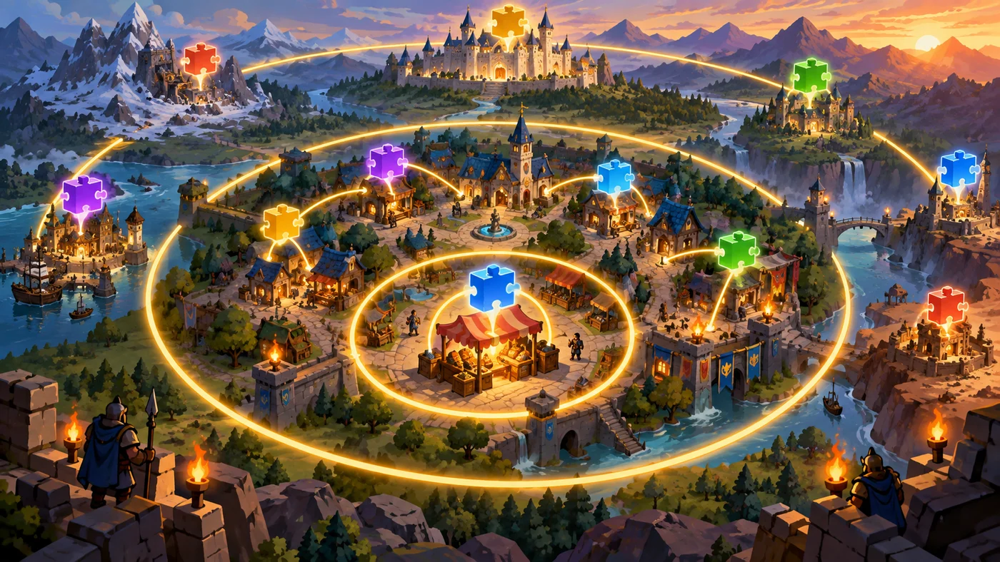

扣哒考级 · GESP 图形化 二级 · 第 1 单元 | 彩虹集市 RAINBOW BAZAAR
集市广播塔 计算机网络与 Internet
Computer Networks and the Internet

安雅
红发队长 · 你的旅伴
彩虹集市的第一眼，是那串灯。
几十个小摊从广场这头排到那头，每个摊子上方都挂着一串彩色灯泡， 而所有灯串都汇向广场正中那座高塔——广播塔。
塔顶的灯一亮，整片集市的灯跟着变换一次颜色。安雅说： "一台机器想跟另一台说话，就得先连起来。这就是网络的起点。"
几十个小摊从广场这头排到那头，每个摊子上方都挂着一串彩色灯泡， 而所有灯串都汇向广场正中那座高塔——广播塔。
塔顶的灯一亮，整片集市的灯跟着变换一次颜色。安雅说： "一台机器想跟另一台说话，就得先连起来。这就是网络的起点。"
安雅 · 红发队长
这一单元不用拼积木，但要记的东西不少：网络三要素、局域网和 Internet 的区别、
浏览器怎么用、邮件怎么写、上网怎么才安全。这些是"背了就能得分"的题——二级卷子每场都出，别在这里丢分。

assets/illustrations/scratch-L2-01-01_broadcast_tower.webp
【配图位】五彩集市中矗立一座高广播塔，发光的灯串把许多小摊位与设备连起来，信号沿灯串流动。（提示词见《GESP配图清单与AI绘图提示词》第四节 2-1）
0 单元导语与目标
Before We Start
0.1 学习目标
- 说清计算机网络是什么、由哪几部分组成；
- 知道什么是 Internet，了解它的形成与发展；
- 会用浏览器：敲网址、搜索、前进后退、下载文件；
- 会收发电子邮件，知道收件人、主题、附件分别是什么；
- 掌握基本的网络安全常识：密码、陌生链接、个人信息。
0.2 考纲对照
| 考纲知识块 | 考纲要求 | 本单元小节 |
|---|---|---|
| 1 计算机网络与 Internet | 计算机网络和 Internet 的含义 | 1.1～1.3、2.1～2.3 |
| 1 计算机网络与 Internet | 浏览器的基本操作 | 3.1～3.3 |
| 1 计算机网络与 Internet | 电子邮件的发送与接收等 | 4.1 |
| 1 计算机网络与 Internet | 计算机网络安全知识 | 4.2 |
这一单元是二级里唯一"不用拼积木也要背"的部分，' '但它几乎每次考试都会出 2～3 道选择题——是最好拿的分。
1 计算机网络是什么
Computer Networks
1.1 网络由什么组成
彩虹集市的广播塔把几十个摊位串了起来。安雅指着那串发光的灯链说： "一条线把几台机器连起来，它们能互相传消息——这就是网络。"
图 1（SVG）：计算机网络的三要素
打个比方：网络就像集市的灯链——每盏灯是一台计算机，灯线是网线，而广播塔就是交换机 / 路由器。塔把你要说的话转给该收到的人。
1.2 局域网与互联网

assets/illustrations/scratch-L2-01-02_network_rings.webp
【配图位】风景上空三层同心发光圆环，分别罩住一个市场街区、一座小镇、一整个王国。（提示词见《GESP配图清单与AI绘图提示词》第四节 2-1）
图 3（SVG）：网络的规模分级
1.3 网络能做什么
图 4（SVG）：网络的四大用途
一句话概括：网络让"信息"和"设备"不再局限在一台机器里——你能用别人的资源，别人也能用你的（在你允许的前提下）。
2 Internet 与它的服务
The Internet
2.1 什么是 Internet
Internet（互联网）不是一个具体的东西，而是全世界无数个网络互相连起来的结果——' '"网络的网络"。
图 5（SVG）：局域网与 Internet 的关系
2.2 形成与发展
图 6（SVG）：Internet 的发展脉络
2.3 常用服务
| 服务 | 干什么用 | 你在哪儿见过它 |
|---|---|---|
| 万维网 WWW | 用浏览器看网页 | 每次打开网页都在用它 |
| 电子邮件 E-mail | 发信、收信、带附件 | QQ 邮箱、学校邮箱 |
| 文件传输 | 上传 / 下载文件 | 网盘、下载软件 |
| 即时通信 | 实时聊天、语音视频 | 聊天软件 |
| 搜索引擎 | 按关键词找信息 | 在搜索框里打字 |
两个最容易混的词：Internet 是那张"网"本身（基础设施）；
WWW（万维网） 是跑在这张网上的一种"服务"（看网页）。可以说"WWW 建立在 Internet 之上"，反过来就不对了。
WWW（万维网） 是跑在这张网上的一种"服务"（看网页）。可以说"WWW 建立在 Internet 之上"，反过来就不对了。
3 浏览器的基本操作
Using a Browser
3.1 地址栏与网址
浏览器顶部长长的那一条就是地址栏。在里面输入网址、按回车，就能去到对应的网页。
图 7（SVG）：一个网址拆开看
打个比方：网址就像邮寄地址：https 是"用快递还是平邮"、域名是"哪个小区"、路径是"几号楼几单元"。三者齐了，东西才送得到。
3.2 搜索与前进后退
图 8（SVG）：浏览器的四个常用按钮
3.3 下载文件
图 9（SVG）：下载文件
注意安全：下载文件要认准官方网站。来路不明的安装包、弹窗里的"立即下载"，都可能藏着病毒。
4 电子邮件与网络安全
E-mail and Safety
4.1 收发电子邮件
图 10（SVG）：一封邮件由四部分组成
打个比方：收件人是信封上的地址，主题是信封上的那一行字，正文是信纸，附件是随信寄出的小包裹。
4.2 网络安全常识
图 11（SVG）：网络安全四条铁律
还有一条常考：在公共电脑上登录账号后，离开前一定要退出登录，并且不要勾选"记住密码"——否则下一个人可以直接用你的账号。
5 代码实战
Level Practice
这一关的舞台上，你不是一个人——有同伴和你一起在场上。 就像网络里的各个节点，各自做事，又互相关联。
关卡 61
朋友
进入关卡 →
故事：
集市的另一头有人在等你：一路上会有同伴出现，它们和你站在同一片场地上。
每走一格，旁边就有需要帮忙的地方——你要一边前进，一边照应左右。
思路：路线是"走一格、处理一件事、再走一格、再处理一件事"。 每一格的动作都一样，所以最自然的写法是把动作放进循环里， 循环里再用"如果……那么"判断当前这一格要不要做事。
重点示例：一步一步照应左右
图形化积木
读法 循环负责"走几格"，两个"如果"负责"这一格要不要做事"
自己试一试：把"4 次"改成"6 次"，看看路线会不会走过头。想一想：如果每一格要做的事都不一样，该怎么写？
这一关把前两个单元的两件工具合在一起用了：' 循环负责做几遍，分支负责每一遍怎么做。
和网络有什么关系？网络里的每台计算机也是这样：各做各的事，同时又在通过网络互相影响。这一关只是让你先感受一下"多个角色同时在场"的感觉。
去扣哒世界闯这一关 →
6 常见陷阱
Common Traps
陷阱 1：把 Internet 和 WWW 当成一回事。Internet 是那张"网"，WWW 是跑在上面的"看网页"服务。
正确说法：WWW 建立在 Internet 之上；Internet 上还跑着邮件、文件传输等别的服务。
正确说法：WWW 建立在 Internet 之上；Internet 上还跑着邮件、文件传输等别的服务。
陷阱 2：以为局域网比 Internet 小就一定慢。在局域网范围内，访问速度通常更快——因为不用绕远路。
正确理解：范围小、链路短，速度反而好。
正确理解：范围小、链路短，速度反而好。
陷阱 3：把浏览器的"返回"和"刷新"搞混。"返回"是回到上一个看过的页面；"刷新"是重新加载当前页。
正确记法：返回 = 往回走；刷新 = 原地重来。
正确记法：返回 = 往回走；刷新 = 原地重来。
陷阱 4：用生日、手机号当密码。这些信息很容易被猜到。
正确做法：用大小写字母 + 数字 + 符号组成的密码，而且不同网站别用同一个。
正确做法：用大小写字母 + 数字 + 符号组成的密码，而且不同网站别用同一个。
7 题目练习
Practice
第 1 题改编自 2026 年 6 月 · 图形化编程 二级 第 1 题，其余为原创练习题。
改编自 2026 年 6 月 · 图形化编程 二 级 · 第 1 题单选题
智能温室里有一个"湿度小侦探"，它能随时感受土壤干不干，然后立刻把消息告诉中央电脑；电脑收到消息后，再决定要不要打开水龙头浇水。
这个"湿度小侦探"的作用，相当于计算机系统中的哪个部件（ ）。
这个"湿度小侦探"的作用，相当于计算机系统中的哪个部件（ ）。
A.处理器——像大脑，负责思考和计算
B.存储器——像笔记本，负责记住信息
C.输入设备——像耳朵和眼睛，负责接收外界信息
D.输出设备——像嘴巴和手，负责把结果说出来或做出来
B.存储器——像笔记本，负责记住信息
C.输入设备——像耳朵和眼睛，负责接收外界信息
D.输出设备——像嘴巴和手，负责把结果说出来或做出来
查看答案与详解
答案：C。湿度传感器只做一件事：把"土壤干不干"这个外界信息收进来，所以它是输入设备。
A 错：真正"决定要不要浇水"的是中央电脑，那才是处理器；
B 错：传感器不负责记住信息；
D 错：打开水龙头才是"把结果做出来"，属于输出。
顺便说一句：这类"谁感知、谁计算、谁执行"的分工，和网络里"谁收集数据、谁处理数据"是一样的思路。
对应小节1.1、1.3 计算机部件与网络的分工。
A 错：真正"决定要不要浇水"的是中央电脑，那才是处理器；
B 错：传感器不负责记住信息；
D 错：打开水龙头才是"把结果做出来"，属于输出。
顺便说一句：这类"谁感知、谁计算、谁执行"的分工，和网络里"谁收集数据、谁处理数据"是一样的思路。
对应小节1.1、1.3 计算机部件与网络的分工。
原创练习题单选题
彩虹集市的摊主们把电脑连成了一张网，方便互相传账目。下列关于计算机网络的描述，正确的是（ ）。
A.网络就是一台性能特别强的计算机
B.网络是把若干台计算机和设备用通信线路连接起来，实现资源共享与信息传递
C.只要有两台计算机放在同一个房间里，就自动组成网络
D.网络的唯一用途是玩游戏
B.网络是把若干台计算机和设备用通信线路连接起来，实现资源共享与信息传递
C.只要有两台计算机放在同一个房间里，就自动组成网络
D.网络的唯一用途是玩游戏
查看答案与详解
答案：B。网络的本质是"连起来 + 能传消息 + 能共享资源"。
A 错：网络不是一台机器，而是一群机器之间的连接；
C 错：放在一个房间但没连起来，还是两台孤立的机器；
D 错：网络能共享信息、通信、共享设备、提供在线服务，用途远不止玩游戏。
对应小节1.1 网络由什么组成。
A 错：网络不是一台机器，而是一群机器之间的连接；
C 错：放在一个房间但没连起来，还是两台孤立的机器；
D 错：网络能共享信息、通信、共享设备、提供在线服务，用途远不止玩游戏。
对应小节1.1 网络由什么组成。
原创练习题单选题
下面关于 Internet 与万维网（WWW）的说法，正确的是（ ）。
A.Internet 和 WWW 是同一个东西的两种叫法
B.WWW 是建立在 Internet 之上的一种服务
C.Internet 是建立在 WWW 之上的
D.WWW 比 Internet 的范围更大
B.WWW 是建立在 Internet 之上的一种服务
C.Internet 是建立在 WWW 之上的
D.WWW 比 Internet 的范围更大
查看答案与详解
答案：B。Internet 是那张"网"，WWW 是跑在这张网上的"看网页"服务——服务建立在网络之上。
A 错：两者是"基础设施"与"服务"的关系；
C 错：说反了；
D 错：Internet 的范围最大，覆盖全球。
对应小节2.1、2.3 Internet 与常用服务。
A 错：两者是"基础设施"与"服务"的关系；
C 错：说反了；
D 错：Internet 的范围最大，覆盖全球。
对应小节2.1、2.3 Internet 与常用服务。
原创练习题单选题
小明在浏览器里看了一个网页，想回到刚才看过的那个页面，应该点击浏览器的哪个按钮（ ）。
A.刷新
B.返回
C.主页
D.新标签页
B.返回
C.主页
D.新标签页
查看答案与详解
答案：B。"返回"就是回到上一个看过的页面，这正是考纲里"查找并返回到最近的 web 网页"的意思。
A 错：刷新是重新加载当前页；
C 错：主页是回到起始页，不一定是你刚才那个页面；
D 错：新标签页是打开一个新的空白页。
对应小节3.2 搜索与前进后退。
A 错：刷新是重新加载当前页；
C 错：主页是回到起始页，不一定是你刚才那个页面；
D 错：新标签页是打开一个新的空白页。
对应小节3.2 搜索与前进后退。
原创练习题多选题
下面哪些做法有助于保护上网安全（ ）。
A.给账号设置由字母、数字和符号组成的复杂密码
B.收到"恭喜中奖"的陌生链接后先点开看看
C.在公共电脑上用完账号后主动退出登录
D.从软件官方网站下载安装包
B.收到"恭喜中奖"的陌生链接后先点开看看
C.在公共电脑上用完账号后主动退出登录
D.从软件官方网站下载安装包
查看答案与详解
答案：A、C、D。这三条都是标准的网络安全习惯。
B 错：来路不明的链接可能藏着钓鱼网站或病毒，不要点开——这是最典型的安全陷阱题。
对应小节4.2 网络安全常识。
B 错：来路不明的链接可能藏着钓鱼网站或病毒，不要点开——这是最典型的安全陷阱题。
对应小节4.2 网络安全常识。
原创练习题判断题
计算机网络只能用来浏览网页，不能共享打印机这样的设备。（ ）
查看答案与详解
答案：错误（×）。网络的作用有四类：共享信息、互相通信、共享设备、在线服务。
共享打印机正是"共享设备"的典型例子——办公室里一台打印机接上网，所有电脑都能用它。
对应小节1.3 网络能做什么。
共享打印机正是"共享设备"的典型例子——办公室里一台打印机接上网，所有电脑都能用它。
对应小节1.3 网络能做什么。
8 本单元小结
Unit Summary

贺舒曼 · 镜中先知
这一单元没有积木，全是"要背的话"。但也正因为这样，它是最好拿分的一块——
网络三要素、Internet 与 WWW 的区别、浏览器的四个按钮、安全四条铁律，
把这四组记住，二级卷子上的网络题就稳了。
你在广播塔下学到了什么
- 网络三要素：若干计算机 + 连接介质 + 网络设备；
- 范围分级：局域网 → 城域网 → 广域网 → Internet；
- Internet 是网、WWW 是服务；常用服务还有邮件、文件传输、即时通信、搜索引擎；
- 浏览器：地址栏敲网址、返回 / 前进 / 刷新 / 主页、从官网下载文件；
- 安全四条：复杂密码、不点陌生链接、不外泄个人信息、软件从官方下载。
下一站：摊主的流程图
集市的摊主做事很有条理，因为他们的柱子上钉着一张图——流程图。
下一单元我们学着把"做事步骤"画成有方框、有箭头的图，再把它翻译成一块块积木。